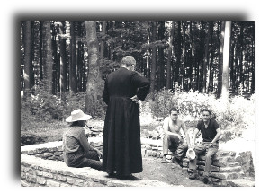

Gallorömischer Gutshof Goebelingen/Miecher

Besichtigung und Führungen
- Die Römervilla kann zu jeder Zeit besichtigt werden. Informationstafeln vor Ort führen den Besucher über das Gelände. Parkplätze befinden sich unten an der Straße.
- Für Gruppen und Schulklassen können geführte Besichtigungen bei uns reserviert werden. Bitte melden Sie sich doch per E-Mail oder Telefon.
Spezielle Veranstaltungen
- 13/09/2020 - Tag der Offenen Tür
Etwas Geschichte ...
Miecher, ein Ort an dem die Römer wohnten
Dieser kleine Wald heißt "am Miecher". Der Begriff kommt von dem lateinischen Wort maceries, das Trümmerhaufen bedeutet. Etwa 300 m von hier liegt ein gallo-römischer Gutshof, von dem heute nur noch die Grundmauern erhalten sind. Erzählungen zufolge unternahm bereits in den 1930er Jahren ein Dorflehrer erste Ausgrabungen im "Miecher". Leider gibt es keine Aufzeichnungen seiner Arbeit. 1964 begann Pfarrer Georges Kayser dann mit der systematischen Erforschung der römischen Relikte von Goeblingen. Zu Beginn dachte er, er würde einen Grabhügel (Tumulus) untersuchen. Doch sehr bald stellte sich heraus, dass er auf die Überreste eines gallo-römischen Gebäudes gestoßen war. G. Kayser hatte eine kleine Mannschaft von Freiwilligen um sich geschart, die ihm bei der Arbeit zur Hand ging und regelmäßig hier im Wald anzutreffen war. 1968 schließlich war das erste Gebäude (das Hauptwohngebäude der Villa) freigelegt und die Mauern wurden vom Nationalen Denkmalamt gefestigt. Auch in den folgenden Jahren gingen die Arbeiten weiter, so wurde ein zweites Gebäude ausgegraben und 3 weitere lokalisiert. Seit 1991 führt der Nachfolgeverein D'Georges Kayser Altertumsfuerscher das begonnene Werk mit staatlicher Genehmigung fort. Und inzwischen wurden einige beachtliche Entdeckungen gemacht. Die gewonnenen Erkenntnisse belegen, dass schon lange vor der römischen Besiedlung der "Miecher" bewohnt war. Bereits Menschen der Stein-, Bronze- und Eisenzeit haben ihre Spuren an diesem Ort hinterlassen. Der Waldweg, der heute zum Gutshof führt ist nicht gallo-römischen Ursprungs, sondern wurde in der Neuzeit angelegt. Die antike Zufahrt wird wohl von Süden her gewesen sein. Die hier im Wald aufgestellten Tafeln sollen Ihnen, liebe Besucher, die Lebensart unserer Vorfahren vor Augen führen und Ihr Interesse an den stummen Zeugen unserer Vergangenheit wecken.:: Kalender
- 23/02/2020
Generalversammlung - 13/04/2020
Keltische Handwerker im Ausgriewermusée - 23-29/08/2020
Jugendlager
:: Mitgliedskarte

:: Wir werden unterstützt von
- Ministère de la Culture
- Ministère de l'Éducation nationale, de l'Enfance et de la Jeunesse
- Ministère de l'Économie
- Commune de Kehlen
- Commune de Koerich
- Commune de Mamer
- Service National de la Jeunesse
- Centre National de la Recherche Archéologique